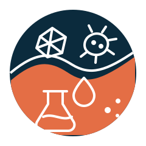
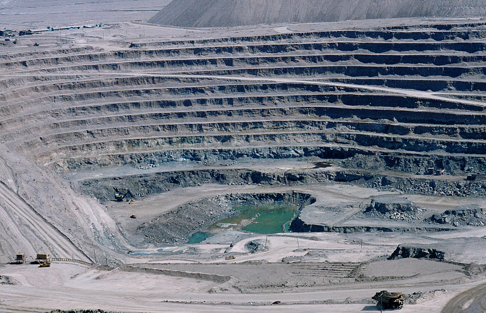
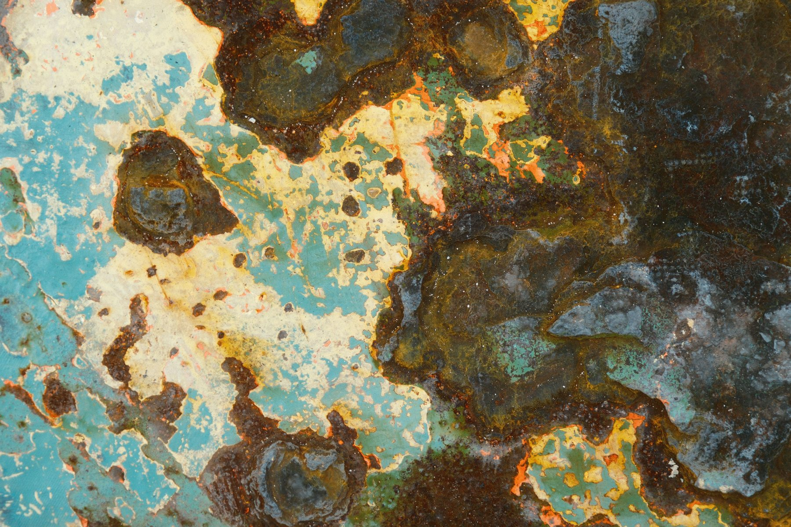

01 · BIOLEACHING
Let microbes do the chemistry
Biological extraction and oxidation of metals from ores and mineral resources.

BIOMINING &

We use biology to rethink metal recovery, circular resources, remediation and corrosion.
Biological extraction and oxidation of metals from ores and mineral resources.
Critical metals and rare earth elements from secondary resources and wastes.

Biofilms, mineral interfaces and microbiologically influenced corrosion.

Head of Biomining and Biometallurgy Laboratory
BIOMINING · BIOCORROSION · ENVIRONMENTAL MINERALS BIOTECHNOLOGY · BIOREMEDIATION